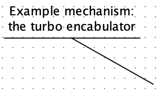
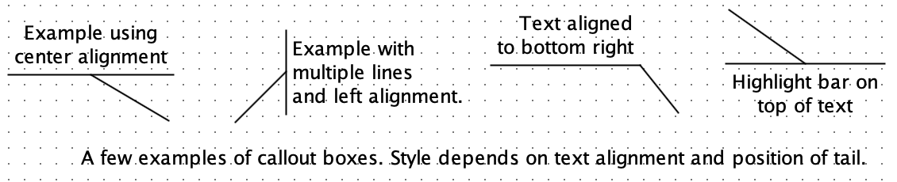

Callout Tool
| Library: |
Mouse Tools |
| Introduced: |
5.0.4-HC |
| Appearance: |
 |
Behavior
This tool adds callouts to a circuit, similar to a "speach bubble". These are
text boxes, but with an adjustible line or "tail" that can draw attention
elsewhere.
To edit the text, use the
 Text Tool.
To adjust the tail, use the
Text Tool.
To adjust the tail, use the
 Multi-Tool and move the magenta handle.
Multi-Tool and move the magenta handle.
The style used for the callout is based on the text alignment and the
position of the tail. Left-aligned text, for example, will have the tail joined
to a highlight bar on the left side of the text, for example, while
center-aligned text will have the tail joined to a highlight bar on the top or
bottom of the text.

Tip: Like text boxes, callouts can be placed anywhere on the canvas; they do
not "snap" to the grid. While moving a callout, you can hold the ALT key (or
option on MacOS) to force "snap to grid" behavior.
Attributes
- Text
- The text appearing in the callout box. This can be edited by changing the
attribute in the attribute table, or using the Text Tool directly the
canvas.
- Font
- The font used for the callout box.
- Horizontal Alignment
- Controls the horizontal alignment of the text, as well as where the text appears relative to
the origin (i.e. where the mouse was clicked when creating the callout).
This
also affects the style used to draw the callout's tail and highlight bar.
"Left" uses left-alignment, and positions the text so its left edge is at the origin.
"Right" uses right-alignment, and positions the text so its right edge is at the
origin. "Center" horizontally centers each line, and positions the text
horizontally so the center is at the origin.
- Vertical Alignment
- Controls the where the text appears relative to the origin (i.e. where the
mouse was clicked when creating the comment).
This also affects the style used to draw the callout's tail and highlight bar.
"Base" positions the text so the
origin is at the baseline of the first line of text. "Top" positions the text so
the origin is at the top of first line of the text. "Bottom" positions the text
so the origin is at the bottom of the first line of text. "Center" centers the
first line of text vertically at the origin.
NOTE: For legacy reasons, when
there are multiple lines of text, vertical alignment is relative to the
first line of text, never to the last line or to the entire block of
text.
- Offset dx
Offset dy
- Control where the tail ends, relative to the origin. The tail position can
be adjusted by changing these attributes, or by using the
Multi-Tool to move the magenta handle on the tail.
FPGA Synthesis
Callouts are silently during FPGA synthesis.
Up to Library Reference